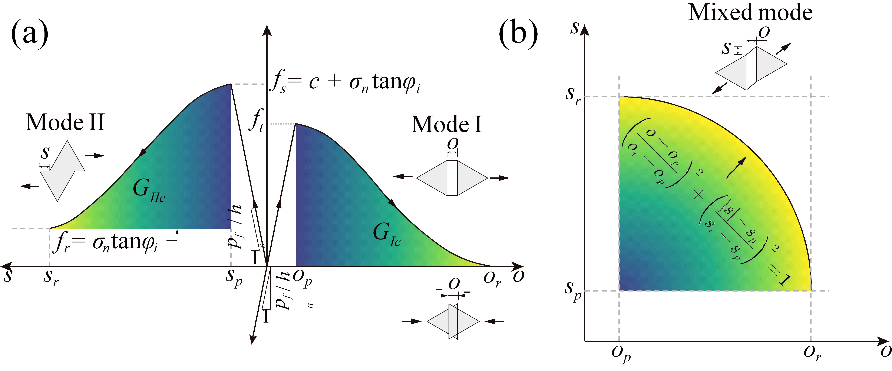
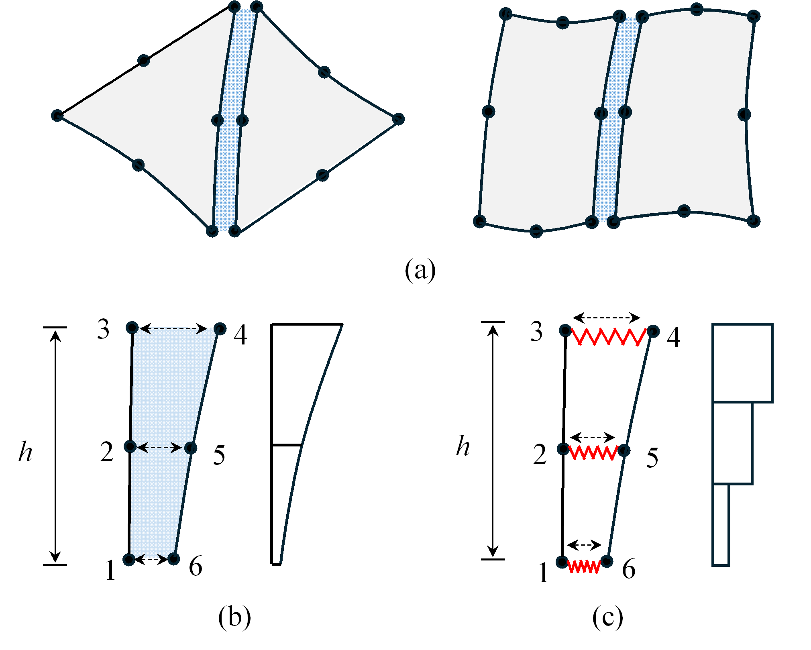
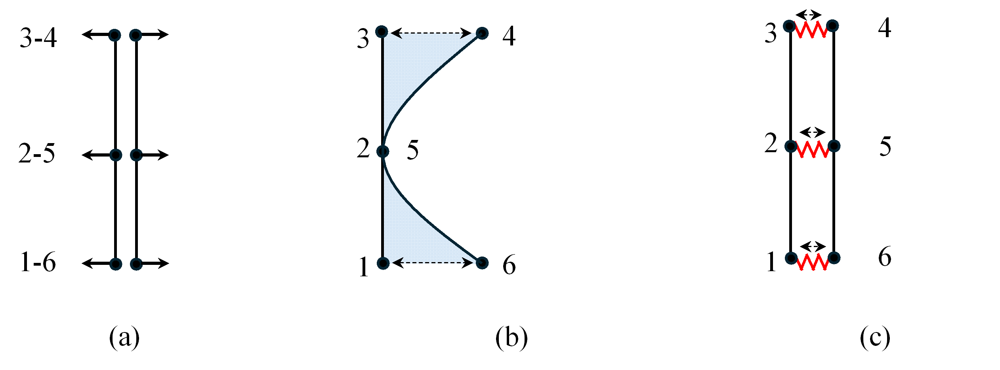

Solid Cohesive Mechanics#
In FDEM, cohesive elements are inserted between adjacent bulk elements to bond the node pairs and to represent the initiation and propagation of fractures. As separation of a node pair arises, the cohesive element undergoes an elastic deformation stage, a damage softening stage and an ultimate fracturing stage.
Constitutive law of the cohesive element#
The constitutive law of the cohesive element is characterized by the fracture process zone (FPZ) model. By separating the normal and tangent components, the constitutive law between the separation \(\boldsymbol{\delta }=\left[ o, s \right]\) and the cohesive stress \(\boldsymbol{\sigma }=\left[ \sigma _n, \tau \right]\) can be described as
where \(\sigma _n\) and \(\tau\) denote the normal and tangent components of the bonding stress \(\boldsymbol{\sigma }\), respectively; \(o\) and \(s\) denote the normal and tangent components of the relative displacement \(\boldsymbol{\delta }\) between a node pair; \(p_n\) is the penalty stiffness; \(o_p\) and \(s_p\) are the elastic limit displacements in the normal and tangent directions, with \(o_p=f_t/p_n\) and \(s_p=f_s/p_n\); \(o_r\) and \(s_r\) are the ultimate limit displacements; \(f_t\) and \(f_s\) are the tensile strength and direct shear strength of the cohesive element; \(\varphi\) is the inner friction angle; and \(f\left( D \right)\) is the characteristic function describing the softening curves, where \(D\) is the damage variable defined as
{kind=link}

Figure 1. Mechanical behaviour of joint elements in FDEM: (a) Mode I tensile behaviour and Mode II shear behaviour; (b) Mixed mode failure criterion.#
Quadratic cohesive element#
In the two-dimensional linear FDEM framework, four-node cohesive elements are used to bond the node pairs between linear triangle elements. To satisfy the continuity condition in continuum mechanics, all node pairs among high-order elements should be adhered to ensure the stress coordination on the edges. Therefore, a novel quadratic cohesive element is proposed. The new cohesive element ensures the compatibility of bulk elements of an arbitrary order through uniform cohesion among node pairs.
Based on Eqs. 1-3, the stress at the positions of all node pairs can be directly obtained. However, to compute the nodal cohesive force, the complete stress distribution along the element edge and the integration strategy need further assumptions. The traditional four-node cohesive element assumes a linear cohesive stress distribution consistent with the displacement distribution along the element edge. Extending this assumption to the quadratic-order case, the integrated nodal cohesive force \(\boldsymbol{f}_{\mathrm{int},\mathrm{coh}}^{ecoh}\) can be given based on the principle of virtual work
where the local nodal cohesive traction vector is \(\boldsymbol{t}_{ecoh}=\left[ \boldsymbol{t}_1, \boldsymbol{t}_2, \boldsymbol{t}_3 \right] ^{\mathrm{T}}\), and \(\boldsymbol{W}\) is the nodal cohesive force allocation matrix. At the elastic state, the nodal cohesive force can be expressed as the product of the cohesive stiffness matrix \(\boldsymbol{K}\) and the relative displacement of each node pair, i.e. \(\boldsymbol{f}_{\mathrm{int},\mathrm{coh}}^{ecoh}=\boldsymbol{K}\cdot \boldsymbol{\delta}\) with \(\boldsymbol{K}=p_n\boldsymbol{W}\).
Giving the quadratic shape function vector in one dimension \(\left. \boldsymbol{N}^{ecoh} \right|_{\varGamma}=\frac{h}{2}\left[ \frac{1}{2}\xi \left( \xi -1 \right) , 1-\xi ^2, \frac{1}{2}\xi \left( \xi +1 \right) \right]\), the stiffness using continuously distributed stress \(\boldsymbol{K}_{continuous}\) is obtained as
where \(h\) is the length of the element edge. It can be observed that the cohesive stiffness is primarily concentrated on the mid-side node, while the stiffness on the corner nodes remains very weak. This non-uniform assignment of cohesive stiffness can induce deformation incompatibility at the interfaces of the bonded continuum elements, leading to a non-physical degradation of the apparent cohesive strength, and causing premature damage of the cohesive element at the edges even when the overall stress level is far below the nominal strength.
{kind=link}

Figure 2. High order cohesive elements and two computation strategies: (a) Quadratic order cohesive element; (b) Continuously distributed stress method; (c) Discrete nodal spring method.#
Therefore, a new quadratic cohesive element is proposed to solve this problem. As shown in Figure 2 (c), the newly developed cohesive element can be treated as a series of independent springs, which compute the cohesive force solely based on each node pair’s cohesive stress. Consequently, the nodal force at each node can be directly determined as
and the nodal force vector can also be represented as \(\boldsymbol{f}_{\mathrm{int},\mathrm{coh}}^{ecoh}=\boldsymbol{W}_d\cdot \boldsymbol{t}_{ecoh}\), where the weight matrix \(\boldsymbol{W}_d=\frac{h}{3}\boldsymbol{I}_n\). At the elastic state, the cohesive stiffness \(\boldsymbol{K}_{discrete}\) is
In this way, each node pair is bonded without bias. As shown in Figure 3, the opening of the three node pairs using the proposed nodal spring element is very uniform. This not only ensures the interface compatibility but also prevents the artificial reduction of the material strength in the quadratic-order circumstance of FDEM.
{kind=link}

Figure 3. The comparison of interface compatibility under (a) Uniform nodal force between (b) Continuously distributed stress method, and (c) Discrete nodal spring method.#